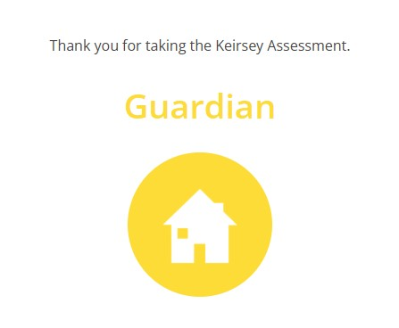
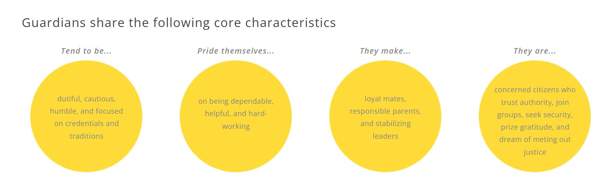
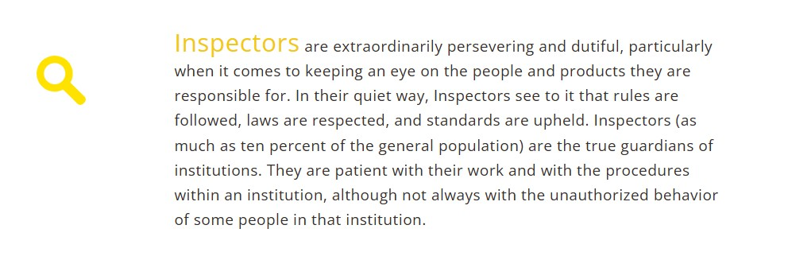

Personality
Strongest Trait and its Impact on my Academic Life
One of my strongest traits is discipline. I have a deep internal drive to complete
whatever I start, no matter how long it takes or how difficult it becomes. This trait has been key to my
academic success as I pursue a BSc in Applied Artificial Intelligence while working full-time in
technical support. I don’t rely on fleeting motivation; instead, I build systems, set routines, and
commit to them.
My hobbies are mainly reading and problem-solving which both directly influence my learning style.
Reading slows me down and deepens my understanding, especially when engaging with complex materials.
Problem-solving gives me clarity. Whether it’s debugging code or dissecting a tricky concept, I break it
down step by step. That steady, logical mindset has helped me stay consistent, even under pressure.
Above my desk is a daily reminder I’ve kept since my first semester:
"Dear God,
Please give me the motivation and discipline to achieve my goals when the desire has
left."
That prayer reflects how I approach school, anchored by discipline.
Favorite Quote and Hero
“Our deepest fear is not that we are inadequate. Our deepest fear in that we are powerful beyond measure. It is our Light, not our Darkness, that most frightens us.”
I’ve never had just one hero because my family fills that role in different ways. My parents and my
brother have each influenced me through their actions, not through speeches or slogans. My father once
told me, “No matter what happens in life, you always have a home to return to.” That gave me a sense of
safety and stability. My mother always said, “I’m on your side no matter what.” Those simple phrases
became emotional anchors in my life. And my brother, through his quiet focus and determination, taught
me what it means to chase your goals without apology.
While my family doesn’t speak in famous quotes, one moment that changed me came from the 2005 film Coach
Carter when a student recites a poem by Marianne Williamson:
"Our deepest fear is not that we are inadequate.
Our deepest fear in that we are powerful beyond measure.
It is our Light, not our Darkness, that most frightens us.
We ask ourselves, who am I to be brilliant, gorgeous, talented, fabulous?
Actually, who are you not to be?
You are a child of God. Your playing small does not serve the World.
There is nothing enlightening about shrinking
so that other people won’t feel unsure around you.
We were born to make manifest the glory of God that is within us.
It is not just in some of us; it is in everyone.
As we let our own Light shine,
we consciously give other people permission to do the same.
As we are liberated from our own fear,
our presence automatically liberates others."
That poem rewired how I think. It made me realize that I wasn’t just afraid of failure, I was afraid of succeeding and then having to live up to it. Since then, I’ve tried to stop hiding from my potential and to live more boldly, even when it’s uncomfortable.
Personality Test Results
  I took the Keirsey Temperament Sorter test, which categorized me as an ISTJ – The Inspector. I believe the test is fairly accurate in my case, as it reflects key aspects of my personality such as logical thinking, a strong preference for structure, reliability, and independence. These traits align with how I approach work, problem-solving, and decision-making in both my personal and professional life.
In general, I do think personality tests like this can offer valuable insights and help individuals better understand their tendencies and communication styles. That said, they aren't perfect predictors of behavior and shouldn't be taken as absolute definitions. They are best used as a tool for reflection, not as a label.